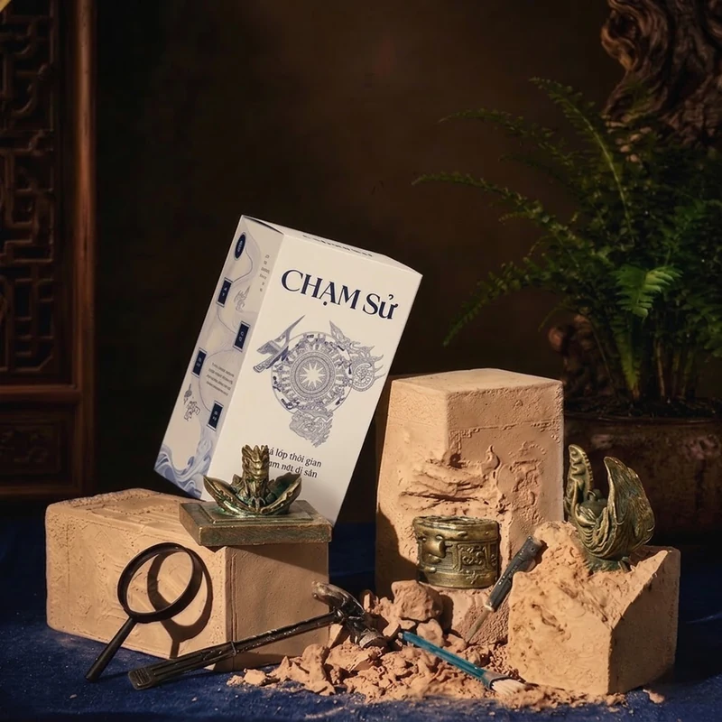
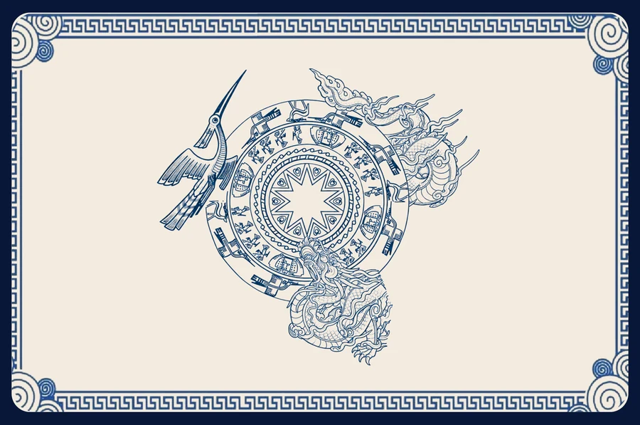

Di sản sống động
Mỗi cổ vật là điểm bắt đầu để tìm hiểu về một triều đại, một dấu mốc và một câu chuyện Việt Nam.
Bạc Hôme giới thiệu
CHẠM Sử kết nối lịch sử Việt Nam, trải nghiệm khai quật thủ công và công nghệ NFC – 3D/AR, khơi gợi sự tò mò với những câu chuyện di sản.

Về chúng tôi
Bạc Hôme khởi nguồn từ tình yêu với thủ công truyền thống và lịch sử Việt Nam. Từ cảm hứng làng chạm bạc Đồng Xâm, dự án tìm cách đưa di sản đến gần hơn với thế hệ trẻ qua những trải nghiệm gần gũi, giàu tính khám phá.
Mỗi cổ vật là điểm bắt đầu để tìm hiểu về một triều đại, một dấu mốc và một câu chuyện Việt Nam.
Trải nghiệm khai quật mô phỏng khuyến khích người dùng quan sát, tìm tòi và khám phá từng hiện vật.
NFC mở ra nội dung số; công nghệ 3D/AR được định hướng giúp di sản hiện diện theo cách mới.
Sản phẩm
Một hành trình khám phá di sản qua bộ dụng cụ khai quật và bộ sưu tập 12 cổ vật lịch sử Việt Nam.
Tự tay khai quật hiện vật và mở ra câu chuyện lịch sử phía sau.
Xem bộ sưu tập
Sưu tầm và khám phá những hiện vật lấy cảm hứng từ nhiều thời kỳ lịch sử.
Khám phá ngayBắt đầu hành trình
Khám phá bộ sưu tập, tìm hiểu cách sử dụng và bắt đầu hành trình chạm vào những lát cắt lịch sử Việt Nam.